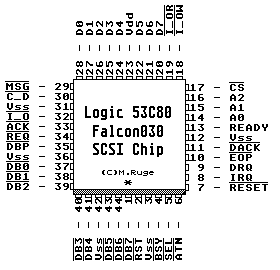

Previous
Next
TOC
Die Pinbelegung des Falcon030 SCSI-Chips Logic 53C80

Warum nicht jede Software auf dem Falcon030 läuft, liegt unter
anderem in der Ansteuerung und der Adreßlage des SCSI-Controllers
begründet, weil der SCSI-Port des Falcon030 eine quasi Mischung aus
ACSI und TT030 SCSI Ansteuerung ist.
LOGIC SCSI Controller und nicht von NCR oder AMD !
Gemeinsame Features vom 5380 und dem 53C80 sind:
Asynchronous Transfer Rate Up to 4 MBytes/sec
Low Power CMOS Technology
Replaces: NCR 5380 and AMD Am5380 Controllers
On-Chip SCSI Bus Drivers
Supports Arbitration, Selection/Reselection, Initiator or Target
Roles, Programmed or DMA I/O, Handshake or Wait State DMA Interlock
Eine SCSI Aktivitätskontrolle am Falcon030 ?
Da es mittlerweile einige Festplatten gibt, die keinen Anschluß mehr
für eine
LED besitzen, kann man folgende Lösung nehmen:
Eine Drahtverbindung von Pin 17 (des SCSI Controllers) zum Pin 3 des
Clockpatch IC 74F04 führen, die Pins 4 und 5 mit etwas Lötzinn ver-
binden und zwischen Pin 6 des 74F04 IC und Vcc (Pin 14 des 74F04 IC)
eine Leuchtdiode einlöten, fertig.
Kapitel Die Pinbelegung des Falcon030 SCSI-Chips, Seite 1